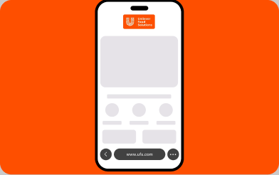

Full Component Preview
A bottom sheet that asks iPhone users to add the site to their Home Screen, so they can get back to our offers in one tap. It only appears in Safari on an iPhone, when the site isn't installed yet, a few seconds after the page loads. Closing it hides it for 30 days. There is no install button: Safari doesn't let a web page start the install, so the GIF shows how to do it and the pointer marks Safari's ⋯ button, where Add to Home Screen is.
Download your personal hub
Install for offline browsing, push notifications, and a native app feel—no App Store needed
- Instant access: One-click launch without typing URLs or searching bookmarks
- Faster navigation: Access content and features even without an internet connection.

Anatomy
One sheet on a backdrop. Figma measurements at 430px wide; all spacing is DS tokens.
| Part | Element | Spec |
|---|---|---|
| Root | .ufs-pwa-popup#pwa-popup | position: fixed; inset: 0; z-index: 10000 (the DS full-screen dialog layer, as the Teaser lightbox). hidden until opened; .is-open runs the animation. |
| Backdrop | __backdrop | Whole page: rgba(137,137,137,0.5), mix-blend-mode: multiply (Figma). Tap closes. |
| Sheet | __sheet | role="dialog", aria-modal, labelled by the title, described by the description. Full width on the bottom edge. --color-mushroom-100, 1px --color-salt border (no bottom), --radius-xl (24px) top corners, shadow 0 -4px 8px rgba(0,0,0,0.15) (Figma, no token). Padding --space-12 top, --space-5 sides, --space-10 + safe area bottom. Content max 440px, centred (landscape). Scrolls if taller than the screen minus --space-6. |
| Close | __close | Figma asset: 27px white circle with a 16px ×, soft shadow. 44 × 44 tap area, 10px from the top, 6px from the end edge (the circle lands 19 / 15px in, as in Figma). aria-label="Close". |
| Title | __title (h2) | "Download your personal hub". H4 mobile: 20px / 1.3 / 600, centred, --space-10 inline padding (clears the close button). |
| Description | __desc | Body small 14px / 1.5, centred, --space-2 below the title |
| Benefits | __benefits (ul) | Body small, start-aligned, --space-3 between items, --space-5 below the description. Each item: a bold (600) lead-in + text. |
| Media | __media → picture | 388 × 243 at 430px wide (full content width inside the 1px border; Figma 392 × 245), ratio 8:5, --radius-lg (16px), --space-8 below the benefits. GIF; a still frame when the user reduces motion. See Media. |
| Pointer | __pointer | Figma asset: 22 × 11 Squid Ink arrow, hanging from the media's bottom edge (1px overlap), 31px from its right edge: centred 62px from the screen's right edge, over Safari's ⋯ button. Physical right on purpose (see RTL). |
| Text colour | — | --color-brand-dark (Squid Ink). Figma uses #000; the DS text colour is used instead. |
- Sheet top → title
- 48px (--space-12; Figma 52, the lesser token)
- Title → description
- 8px (--space-2)
- Description → benefits
- 20px (--space-5)
- Between benefits
- 12px (--space-3)
- Benefits → media
- 32px (--space-8)
- Media → sheet bottom
- 40px (--space-10) + the iPhone's bottom safe area; the pointer sits in it
- Sides
- 20px (--space-5; Figma 19)
<!-- ================================================================ PWA POPUP — iPhone Safari "Add to Home Screen" prompt (bottom sheet) Figma "Rosana 2.0" 4880:4807 (panel) · 4863:4680 (position on screen) Hidden until pwaPopup.init() decides to show it (see pwa-popup.js). ================================================================ --> <div class="ufs-pwa-popup" id="pwa-popup" hidden> <div class="ufs-pwa-popup__backdrop" data-pwa-close></div> <section class="ufs-pwa-popup__sheet" role="dialog" aria-modal="true" aria-labelledby="pwa-popup-title" aria-describedby="pwa-popup-desc" tabindex="-1"> <button type="button" class="ufs-pwa-popup__close" aria-label="Close" data-pwa-close> <img src="../images/pwa-popup/pwa-close.svg" width="37" height="37" alt="" /> </button> <h2 class="ufs-pwa-popup__title" id="pwa-popup-title">Download your personal hub</h2> <p class="ufs-pwa-popup__desc" id="pwa-popup-desc">Install for offline browsing, push notifications, and a native app feel—no App Store needed</p> <ul class="ufs-pwa-popup__benefits"> <li><strong>Instant access:</strong> One-click launch without typing URLs or searching bookmarks</li> <li><strong>Faster navigation:</strong> Access content and features even without an internet connection.</li> </ul> <figure class="ufs-pwa-popup__media"> <picture> <!-- Reduced motion: a still frame of the GIF instead of the animation --> <source srcset="../images/pwa-popup/pwa-media-placeholder.png" media="(prefers-reduced-motion: reduce)" /> <img class="ufs-pwa-popup__media-img" src="../images/pwa-popup/pwa-media-placeholder.png" width="392" height="245" alt="How to install: tap the ⋯ button in Safari's toolbar, then Add to Home Screen" decoding="async" /> </picture> <!-- Points at Safari's ⋯ button below the page (where Add to Home Screen is) --> <img class="ufs-pwa-popup__pointer" src="../images/pwa-popup/pwa-pointer.svg" width="21.9008" height="11.4039" alt="" /> </figure> </section> </div>
/* ================================================================ PWA POPUP — iPhone Safari bottom sheet (Figma 4880:4807) Full-width sheet on the bottom edge of the page, just above Safari's toolbar. Logical properties throughout, except the pointer: it targets Safari's ⋯ button, which doesn't follow the page direction. ================================================================ */ .ufs-pwa-popup { position: fixed; inset: 0; z-index: 10000; } .ufs-pwa-popup[hidden] { display: none; } /* Figma: 50% grey, multiplied over the page */ .ufs-pwa-popup__backdrop { position: absolute; inset: 0; background: rgba(137, 137, 137, 0.5); mix-blend-mode: multiply; opacity: 0; transition: opacity 0.3s ease; } .ufs-pwa-popup__sheet { position: absolute; inset-inline: 0; bottom: 0; max-height: calc(100% - var(--space-6)); overflow-y: auto; overscroll-behavior: contain; padding: var(--space-12) var(--space-5) calc(var(--space-10) + env(safe-area-inset-bottom, 0px)); background: var(--color-mushroom-100); border: 1px solid var(--color-salt); border-bottom: 0; border-start-start-radius: var(--radius-xl); border-start-end-radius: var(--radius-xl); box-shadow: 0 -4px 8px rgba(0, 0, 0, 0.15); /* Figma; no token (shadows in tokens.css fall downward) */ color: var(--color-brand-dark); text-align: center; transform: translateY(100%); transition: transform 0.35s cubic-bezier(0.4, 0, 0.2, 1); } .ufs-pwa-popup__sheet:focus { outline: none; } /* Landscape / wider screens: content keeps its phone width */ .ufs-pwa-popup__sheet > * { max-width: 440px; margin-inline: auto; } .ufs-pwa-popup.is-open .ufs-pwa-popup__backdrop { opacity: 1; } .ufs-pwa-popup.is-open .ufs-pwa-popup__sheet { transform: none; } /* Close: 27px white circle (Figma asset, with its own soft shadow) in a 44px tap area */ .ufs-pwa-popup__close { position: absolute; top: 10px; inset-inline-end: 6px; max-width: none; margin: 0; width: 44px; height: 44px; padding: 0; border: 0; border-radius: var(--radius-full); background: none; cursor: pointer; display: grid; place-items: center; } .ufs-pwa-popup__close img { display: block; margin-top: 1px; pointer-events: none; } .ufs-pwa-popup__close:focus-visible { outline: 2px solid var(--color-accessible-orange); outline-offset: -2px; } .ufs-pwa-popup__title { margin-top: 0; margin-bottom: 0; padding-inline: var(--space-10); font-size: var(--text-h4-mob-size); line-height: var(--text-h4-lh); font-weight: var(--text-h4-w); color: inherit; } .ufs-pwa-popup__desc { margin-top: var(--space-2); margin-bottom: 0; font-size: var(--text-body-sm-size); line-height: var(--text-body-sm-lh); } .ufs-pwa-popup__benefits { list-style: none; padding: 0; margin-top: var(--space-5); margin-bottom: 0; display: grid; gap: var(--space-3); text-align: start; font-size: var(--text-body-sm-size); line-height: var(--text-body-sm-lh); } .ufs-pwa-popup__benefits strong { font-weight: 600; } .ufs-pwa-popup__media { position: relative; margin-top: var(--space-8); margin-bottom: 0; } .ufs-pwa-popup__media-img { display: block; width: 100%; height: auto; aspect-ratio: 392 / 245; object-fit: cover; border-radius: var(--radius-lg); } /* Under the media's bottom edge, centred 62px from the screen's right edge = Safari's ⋯ button */ .ufs-pwa-popup__pointer { position: absolute; top: calc(100% - 1px); right: 31px; display: block; } @media (prefers-reduced-motion: reduce) { .ufs-pwa-popup__sheet { transform: none; opacity: 0; transition: opacity 0.2s ease; } .ufs-pwa-popup.is-open .ufs-pwa-popup__sheet { opacity: 1; } .ufs-pwa-popup__backdrop { transition-duration: 0.2s; } }
/* ================================================================ PWA POPUP — when to show it, open / close, 30-day snooze. Call pwaPopup.init() once the page has loaded. It shows the popup after DELAY ms, only in Safari on an iPhone, when the site isn't already installed and the popup wasn't closed in the last 30 days. ================================================================ */ var pwaPopup = (function () { var KEY = 'ufs-pwa-popup'; // localStorage: time (ms) the popup was last closed var SNOOZE_DAYS = 30; var DELAY = 5000; // ms after init() var root, sheet, lastFocus, hideTimer, showTimer; function el() { if (!root) { root = document.getElementById('pwa-popup'); sheet = root && root.querySelector('.ufs-pwa-popup__sheet'); } return root; } // iPhone (not iPad) Safari. In-app browsers and Chrome / Firefox / Edge on iOS // put Add to Home Screen elsewhere, so the pointer would be wrong there. function isIPhoneSafari() { var ua = navigator.userAgent; return /iPhone|iPod/.test(ua) && /Version\/[\d.]+.*Safari\//.test(ua) && !/CriOS|FxiOS|EdgiOS|OPiOS|GSA\/|FBAN|FBAV|Instagram|LinkedInApp|Line\//.test(ua); } function isInstalled() { return navigator.standalone === true || (window.matchMedia && window.matchMedia('(display-mode: standalone)').matches); } function snoozedUntil() { try { var t = +localStorage.getItem(KEY); return t ? t + SNOOZE_DAYS * 864e5 : 0; } catch (e) { return 0; } // storage blocked: never snoozed (shows once per page load at most) } // Why the popup would or wouldn't show here: '' = it would show function reason() { if (!isIPhoneSafari()) return 'not Safari on an iPhone'; if (isInstalled()) return 'already installed (opened from the Home Screen)'; var until = snoozedUntil(); if (until > Date.now()) return 'closed recently, snoozed until ' + new Date(until).toLocaleDateString(); return ''; } function open() { if (!el() || !root.hidden) return; clearTimeout(hideTimer); lastFocus = document.activeElement; root.hidden = false; root.offsetWidth; // start the slide-up from the closed position root.classList.add('is-open'); document.documentElement.style.overflow = 'hidden'; sheet.focus({ preventScroll: true }); } function close() { if (!el() || root.hidden) return; try { localStorage.setItem(KEY, String(Date.now())); } catch (e) {} root.classList.remove('is-open'); document.documentElement.style.overflow = ''; hideTimer = setTimeout(function () { root.hidden = true; }, 350); if (lastFocus && lastFocus.focus) lastFocus.focus({ preventScroll: true }); } function onKey(e) { if (!root || root.hidden) return; if (e.key === 'Escape') { e.preventDefault(); close(); } // Keep focus in the sheet: the close button is its only control if (e.key === 'Tab') { e.preventDefault(); root.querySelector('.ufs-pwa-popup__close').focus(); } } function wire() { if (!el() || root.dataset.wired) return; root.dataset.wired = '1'; root.addEventListener('click', function (e) { if (e.target.closest('[data-pwa-close]')) close(); }); document.addEventListener('keydown', onKey); } function init(opts) { wire(); if (!root || reason()) return; clearTimeout(showTimer); showTimer = setTimeout(open, opts && opts.delay != null ? opts.delay : DELAY); } return { init: init, open: function () { wire(); open(); }, close: close, reason: reason, resetSnooze: function () { try { localStorage.removeItem(KEY); } catch (e) {} } }; })();
Media (GIF)
The animation shows the install steps. Export it to fit the slot; the CSS rounds the corners.
| Item | Spec |
|---|---|
| Format | GIF, looping forever. (A muted, looping MP4 would be about 10× lighter if the GIF gets heavy; same slot.) |
| Size | 784 × 490 px (2× of 392 × 245, ratio 8:5). Square corners: the 16px radius is CSS. Shown with object-fit: cover, so a slightly different ratio is cropped, not stretched. |
| Weight | Aim for under 1 MB: many users will be on mobile data. width/height are set, so nothing jumps while it loads. |
| Reduced motion | A still PNG (the clearest frame, same size) in the <source media="(prefers-reduced-motion: reduce)">. GIFs can't be paused, so this is the only way to stop the motion. |
| Alt text | Describes the steps, in the page language: "How to install: tap the ⋯ button in Safari's toolbar, then Add to Home Screen". Update it if the GIF shows different steps. |
| Now | handover/images/pwa-popup/pwa-media-placeholder.png: the static Figma frame (392 × 245), used for both until the GIF arrives. |
When It Shows
Call pwaPopup.init() on every page load. It decides; nothing else needs to.
| Rule | Detail |
|---|---|
| Device | Safari on an iPhone only (iPhone in the user agent, Safari's Version/…). Not iPad (its ⋯ / Share button is at the top), not Chrome, Firefox or Edge on iOS, not in-app browsers (Instagram, Facebook, Google app…): the pointer and the GIF would be wrong there. Android and desktop never see it. |
| Not installed | Never when the site was opened from the Home Screen (navigator.standalone or display-mode: standalone). |
| Delay | 5 seconds after init(), so it doesn't cover the page the moment it loads (init({ delay }) to change it). |
| Snooze | Closing it (×, the grey area or Esc) stores the time in localStorage["ufs-pwa-popup"]; it doesn't show again for 30 days. Storage blocked (private mode): no snooze, so it can come back on the next page load. |
| Once per page | At most once per page load. |
| Other overlays | Production: don't open it over another dialog (cookie consent, sign-in, cart, newsletter popup). Wait until they close, or skip this page load. |
| Debug | pwaPopup.reason() returns why it wouldn't show here (empty = it would); pwaPopup.resetSnooze() clears the snooze. |
Interaction
What happens at each step.
| Moment | What happens |
|---|---|
| Shows | Slides up from the bottom; the page behind is dimmed and stops scrolling. Focus moves to the sheet, so screen readers read the title and description. |
| × / grey area / Esc | Slides down, starts the 30-day snooze, focus goes back where it was. |
| Tab | Stays on the close button (the sheet's only control). |
| The user installs | They tap ⋯ → Add to Home Screen in Safari. Safari doesn't tell the page, so the popup stays until it's closed. From then on, opening the site from the Home Screen never shows it. |
| Taller than the screen | Small iPhones or landscape: the sheet stops 24px below the top and scrolls inside. |
Animation
The DS drawer curve, vertical.
| Element | Trigger | Animation | Duration | Easing |
|---|---|---|---|---|
| Sheet | Show / close | translateY(100%) → 0 / back | 350ms | cubic-bezier(0.4, 0, 0.2, 1) |
| Backdrop | Show / close | opacity 0 → 1 / back | 300ms | ease |
| Reduced motion | prefers-reduced-motion | Sheet fades in and out instead of sliding; the GIF is replaced by its still frame | 200ms | ease |
Accessibility
A modal dialog with one control.
| Item | Detail |
|---|---|
| Role | role="dialog" + aria-modal="true", aria-labelledby the title, aria-describedby the description |
| Focus | The sheet (tabindex="-1") on open; Tab kept on Close; restored on close |
| Close | 44 × 44 tap area around the 27px circle; visible focus ring (2px --color-accessible-orange) |
| Contrast | Squid Ink on mushroom-100: 14.6:1 (AAA) |
| Decorative | The pointer and the close icon have empty alt; the GIF has a real description |
Production Notes
What the site needs so that Add to Home Screen gives an app, not just a bookmark.
| Item | Detail |
|---|---|
| Web app manifest | <link rel="manifest" href="/manifest.webmanifest"> with name, short_name, start_url, display: "standalone", theme_color, icons. Without it, iOS adds a plain Safari bookmark. |
| Home Screen icon | <link rel="apple-touch-icon" href="/apple-touch-icon.png">, 180 × 180, no transparency. Title: <meta name="apple-mobile-web-app-title" content="UFS">. |
| Copy promises | The description and benefits promise offline browsing and push notifications. Ship that copy only if the app does both: offline needs a service worker; push works on iOS 16.4+ only for Home Screen apps, after the user allows it. |
| No install button | iOS has no beforeinstallprompt: a page can't start the install. That's why the popup explains instead. |
iPhone Sizes
iPhone only, so there's no desktop layout. The sheet is always full width; the pointer stays 62px from the right edge, where the ⋯ button is on every iPhone size.
i18n & RTL
All strings follow the page language. Arabic below; the preview is the real markup in dir="rtl".
| English | Arabic |
|---|---|
| Download your personal hub | نزّل مركزك الشخصي |
| Install for offline browsing, push notifications, and a native app feel—no App Store needed | ثبّته لتتصفح دون اتصال وتتلقى الإشعارات وتحصل على تجربة تشبه التطبيقات، دون الحاجة إلى App Store |
| Instant access: | وصول فوري: |
| One-click launch without typing URLs or searching bookmarks | افتحه بنقرة واحدة دون كتابة عناوين URL أو البحث في الإشارات المرجعية |
| Faster navigation: | تنقّل أسرع: |
| Access content and features even without an internet connection. | استخدم المحتوى والميزات حتى دون اتصال بالإنترنت. |
| Close (button label) | إغلاق |
| How to install: tap the ⋯ button in Safari's toolbar, then Add to Home Screen (image alt) | طريقة التثبيت: اضغط على زر ⋯ في شريط أدوات Safari، ثم «إضافة إلى الشاشة الرئيسية» |
/* The sheet is built with logical properties: in RTL the close button moves to the top-left and the benefits align right, with no extra rules. */ /* The pointer does NOT flip: it points at Safari's ⋯ button, which is on the right whatever the page language (it follows the iPhone's language, not the page's). */ .ufs-pwa-popup__pointer { right: 31px; }
navigator.language), not the page direction.